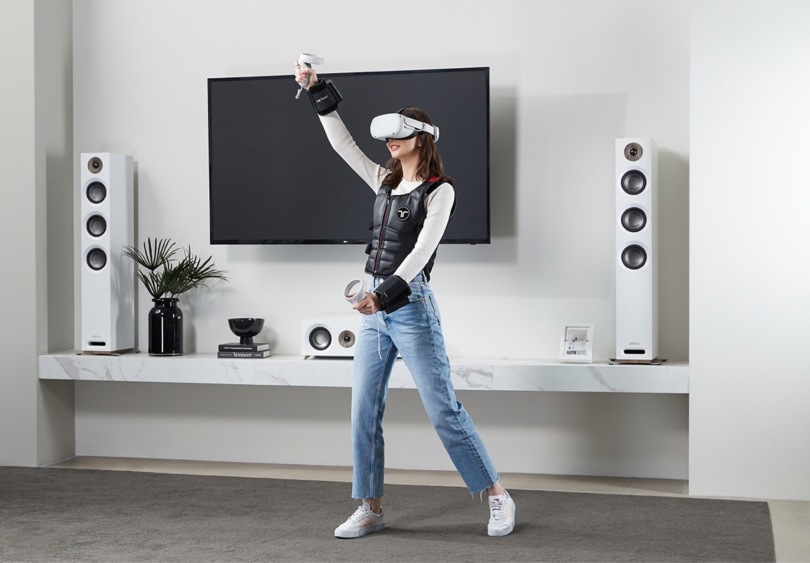

Scott Stein at CNET started the year with an informative article about the present and future of virtual and augmented reality. He reviews latest consoles and technology in VR and what companies are introducing industry game changers.
VR and AR are the Next Big Thing AgainBuiltIn writes an insightful article about the many uses of haptic technology in areas such as the auto industry, gaming, Virtual Reality gear and its progress throughout history.
Haptic Technology 